语言模型的同策略蒸馏：从自生成错误中学习
摘要
知识蒸馏（KD）被广泛用于压缩教师模型，通过训练一个更小的学生模型来降低其推理成本与内存占用。然而，当前针对自回归序列模型的 KD 方法存在训练中所见输出序列与学生模型在推理时生成的序列之间的分布不匹配问题。为解决这一问题，我们引入广义知识蒸馏（GKD）。GKD 不再仅依赖一组固定的输出序列，而是利用教师模型对学生自生成输出序列的反馈，在这些序列上训练学生模型。与监督式 KD 方法不同，GKD 还提供了在学生模型与教师模型之间采用替代损失函数的灵活性，当学生模型缺乏足够表达能力以模仿教师分布时，这可能是有用的。此外，GKD 促进了蒸馏与语言模型 RL 微调的无缝集成。我们展示了 GKD 在蒸馏自回归 T5 语言模型方面的有效性，包括在摘要、翻译和推理任务上的任务特定蒸馏，以及用于指令调优的任务无关蒸馏。
1 引言
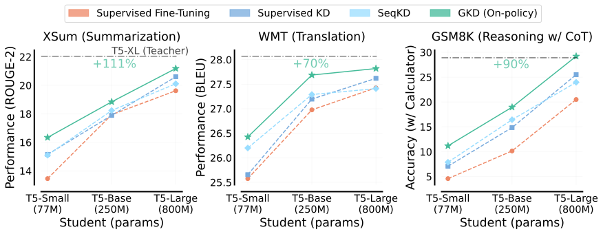
自回归序列模型，如语言模型（LM），已在众多任务中展现出令人印象深刻的能力，而这种成功的关键通常在于扩展训练数据量以及模型参数数量 (Kaplan et al., 2020)。然而，扩展参数数量是有代价的，此类模型的部署受限于其推理成本或内存占用。因此，大型能力强模型实际应用的一个关键目标是通过减少参数数量来压缩它们，同时尽可能多地保留其性能。
压缩模型的一种常用技术是知识蒸馏 (Hinton et al., 2015)。蒸馏是训练一个模型——学生模型——在特定任务集上复制另一个模型——教师模型——知识的过程。通常，学生模型的参数少于教师模型，因此，蒸馏可以在保持比教师模型更低的推理成本和内存占用的同时，提升任务特定性能。当前针对自回归序列模型的蒸馏方法要么需要从教师模型生成一组固定的输出序列 (Kim & Rush, 2016)，这可能代价高昂，要么需要一个固定的序列数据集，由教师模型通过分配词元级概率来标注 (Sanh et al., 2019)。然而，使用固定数据集可能导致训练中所见输出序列与学生模型在推理时自回归生成的序列之间出现分布不匹配，这是模仿学习中一个众所周知的问题 (Pomerleau, 1991; Ross & Bagnell, 2010)。此外，蒸馏的常见目标是最小化教师模型与学生模型分布之间的前向 KL。然而，学生模型可能没有足够的表达能力来拟合教师模型的分布，这可能导致学生模型生成的样本是教师模型不太可能生成的（例如，图 A.16）。
在本文中，我们提出广义 KD（GKD）以缓解上述问题。首先，我们认识到针对自回归序列模型的 KD 可以被视为一个具有交互式专家的模仿学习问题 (Ross et al., 2011)。利用这一洞见，GKD 在同策略的学生模型自生成序列上训练学生模型，而不是在一组固定的输出序列上训练，并将教师模型概率作为这些序列上的专家标签。我们的想法还得到了近期在大型语言模型自身输出序列上进行微调的成功所支持 (Ouyang et al., 2022; Singh et al., 2023)。此外，GKD 提供了优化替代散度度量的灵活性，例如反向 KL 和广义 JSD（第 2 节），这些度量可以利用学生模型有限的能力，专注于生成在教师模型下概率较高的样本。
2 预备知识
自回归生成序列模型。我们将输入和输出序列分别记为 。令 表示由 个词元组成的词表， 表示截至第 个词元已生成的输出序列， 表示序列 的长度。词元级自回归策略 输出定义于 中所有词元上的下一词元概率分布，其条件为输入 和输出序列 。此外， 对应于采样的输出序列 ，其给定输入为 。为便于记法，我们定义 。自回归生成涉及基于先前生成的词元一次预测一个词元。预测 词元 的概率 使用温度为 的 softmax 确定：，其中 是词元 的 logit 分数。较高的 值引入更多随机性，而较低的值则通过偏向最可能的词使输出更加确定。在训练期间，学生模型的温度保持为 1。在评估中，我们使用 贪心采样（）或 温度采样（）。
基于 KL 的散度。两个概率分布之间的散度是衡量分布相似性的度量，其中 KL 散度是一种常用度量。两个离散分布 和 之间的 KL 散度由下式给出： 。
KL 散度不是对称的：。因此，我们将 称为 前向 KL，而将 称为 反向 KL，它们是 与 之间的散度。在经验数据分布下的前向 KL 对应于最大似然，我们在监督学习中对其进行优化。鉴于模型容量不匹配，当近似 并使用分布 时，最小化反向 KL 和前向 KL 分别导致均值寻求和众数寻求行为（图 A.16）。
虽然 KL 散度可能是无界的，但一个即使对于具有不相交支撑集的概率分布也 有界 的著名散度是 广义 JSD（Jensen-Shannon 散度）。JSD() 使用有界系数 在前向 KL 和反向 KL 之间进行插值：
| (1) |
Huszár（2015） 表明 。因此，JSD 的梯度行为分别类似于前向 KL 和反向 KL，相应条件是 接近 0 和 1。
3 自回归序列模型的蒸馏
问题设定。给定两个容量不同的自回归序列模型，其中 和 分别指学生模型和教师模型。我们假设学生模型具有可学习参数 ，且 关于 可微。我们还给定一个输入数据集 。可选地，我们还可以假设能够访问输入-输出序列对数据集 。如果未给定，则可以通过从教师模型采样序列来生成此类数据集。对于散度 ，我们将 与 的词元级分布之间的差异定义为
| (2) |
其中输入为 ，输出序列为 。例如，使用 JSD() 作为 并代入等式 2，会得到 。
监督 FT。如果我们仅给定一个固定的真实输出序列数据集，但无法查询教师策略，那么一种简单的方法是在学生策略下最小化此类序列的负对数似然：。
序列级 KD (Kim & Rush, 2016)。SeqKD 最大化教师模型生成的高概率序列的似然，可以视为在教师模型生成的输出上进行监督 FT。
监督 KD (Hinton et al., 2015; Sanh et al., 2019) 是一种广泛使用的技术，其中学生模型被训练以模仿教师模型的词元级概率分布。学生模型 使用监督目标 进行训练，以教师模型 的目标词元级概率作为监督：
| (3) |
其中期望是对来自数据集的样本取的。这种监督目标通过利用教师模型的完整词元级分布，产生了丰富的训练信号。
3.1 广义知识蒸馏（GKD）
如上所述，常用的 KD 方法使用固定的输出序列数据集，要么使用真实目标，要么使用教师模型生成的序列。然而，使用此类方法蒸馏自回归学生模型会导致训练-推理分布不匹配。这是因为学生在推理时的自回归生成阶段遇到的部分序列可能与训练阶段所见的部分序列相当不同。由于自回归模型在任何步骤的预测都取决于先前的步骤，这种不匹配可能产生级联效应，即早期步骤的预测错误可能影响未来的预测，导致文本生成质量不佳。为解决这种不匹配，我们大量借鉴模仿学习（IL）。特别是，同策略模仿方法 (例如 Ross et al., 2011) 迭代地使用学生策略收集序列，为这些序列获取专家标签，然后在这个数据集上重新训练学生模型。尽管在机器人和深度 RL 中很流行 (Parisotto et al., 2015; Kelly et al., 2019; Agarwal et al., 2022)，但同策略方法通常不用于蒸馏自回归模型。
将同策略模仿扩展到蒸馏，我们提出同策略 KD。在蒸馏过程中使用同策略数据时，学生模型会从教师模型对其自行生成输出序列中错误词元的 logits 获得针对特定词元的反馈。这形成了一种类似于我们在强化学习中观察到的反馈循环，有助于最小化训练-推理分布不匹配。此外，随着学生模型在训练过程中不断进化，其生成的数据质量也会提升。给定输入，学生模型生成输出序列，并模仿教师模型的词元级分布，模仿发生在中间状态上。具体而言，同策略损失由下式给出
| (4) |
其中我们不通过学生模型的采样分布进行反向传播，这与同策略模仿类似。不通过采样过程进行反向传播使训练稳定且计算高效。在同策略 KD 中，训练是在学生模型可能生成的输出序列上进行的。训练时，我们使用温度为来鼓励学生模型生成序列的多样性。此外，给定无标签的输入提示，由于模型规模的差异，使用学生模型生成序列在计算上比教师模型更廉价。
在同策略 KD 的基础上进一步构建，我们统一了监督式和同策略方法，并提出了一种更通用的方法，我们称之为广义 KD（GKD）。 在 GKD 中，我们既可以选择要优化的散度，也可以选择用于训练的输出序列。具体而言，我们可以优化教师模型和学生模型词元级概率分布之间的任意散度。对于输出序列，GKD 使用固定数据集（教师生成的或真实标注的）与同策略学生生成序列的混合。抽象地说，GKD 最小化如下形式的目标：
其中是教师分布与学生分布之间的散度（公式2），而是一个超参数，用于控制学生数据比例，即同策略学生生成输出的比例。与同策略 KD 类似，我们不通过学生模型的采样过程反向传播梯度。同策略 KD 和监督式 KD 是 GKD 的实例化，其中散度分别设为前向 KL，学生数据比例分别设为和。 话虽如此，GKD 允许对比例和散度做出其他选择，我们在本工作中对此进行了探索。
注。与随机初始化的学生模型不同，我们假设可以获得一个能够生成足够质量序列的学生模型，以便教师模型对其提供反馈。在我们的实验中，我们从已经过监督式微调的学生模型开始。这类似于广泛用于语言模型的两阶段 RLHF 训练，即我们先运行 SFT，然后进行在线 RL 微调。因此，GKD 可以利用 RLHF 的超参数调优经验，并且可以以很小的计算开销和无需额外超参数的方式与 RLHF 结合。
3.2 RL 微调 + 同策略 GKD
在某些任务中，从教师模型进行蒸馏可能只是为我们主要目标提供了一个代理，而该目标也可能是不可微的。我们可以用强化学习（RL）直接优化该目标。方便的是，同策略 GKD 可以很容易地与基于人类反馈（RLHF）或 AI 反馈（RLAIF）的 RL 微调相结合，因为它只需要学生模型的输出样本。实际上，假设我们希望针对标量奖励优化学生策略，同时保持接近教师策略，那么我们就得到如下形式的正则化 RL 微调目标：
| (5) |
其中控制蒸馏损失相对于 RL 目标的强度。当时，它将仅执行蒸馏。上述目标使我们能够在最大化奖励的同时，通过蒸馏改进其他模型能力，这有可能减少在对齐语言模型与人类偏好时出现的“对齐税”——即通用模型能力的下降(Ouyang et al., 2022)。我们将上述思路应用于使用 RLAIF 缓解幻觉，同时通过蒸馏提升下游性能（图5）。
注。在 RLHF 或 RLAIF 中，我们通常使用反向 KL 来约束学习到的策略保持接近初始策略。如果只想对现有 RL 微调工作流做轻微修改，我们建议在将 GKD 与 RL 集成时使用反向 KL 或 JSD。
4 实验
在本节中，我们在抽象式摘要、机器翻译和算术推理任务上评估 GKD 用于蒸馏语言模型（一类典型的自回归序列模型）。
学生/教师模型。我们的实验从不同规模的学生模型和教师模型开始，具体而言是开源的 T5 模型(Raffel et al., 2020)，它们在相同数据集上预训练。我们使用经过监督式微调的 T5-XL（B 参数）作为教师模型。对于学生模型，我们使用 T5-small（77M 参数）、T5-base（250M 参数）和 T5-large（800M 参数），它们分别比教师模型小、和倍。更多细节见附录A.2。
GKD 变体。对于 GKD 的散度（见算法1）的选择，我们使用前向 KL、反向 KL 和 JSD 的三种变体：JSD、JSD和 JSD。对于学生数据比例，我们尝试（同策略）、（混合）和（监督式）。我们特别关注此前未被探索的同策略变体（）。
基线。我们与第3节中讨论的广泛使用的 KD 方法进行比较：SeqKD 和 Supervised KD。我们还评估了 ImitKD(Lin et al., 2020)和 f-distill(Wen et al., 2023)，它们可被视为 GKD（）的“混合”数据变体，分别以前向 KL 和全变差距离作为散度。所有基线都从与 GKD 相同的监督式微调学生检查点开始。
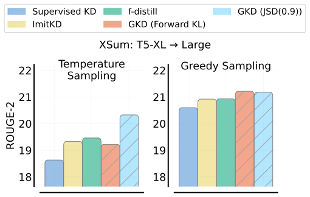
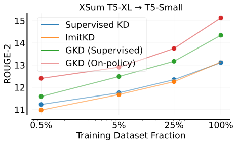
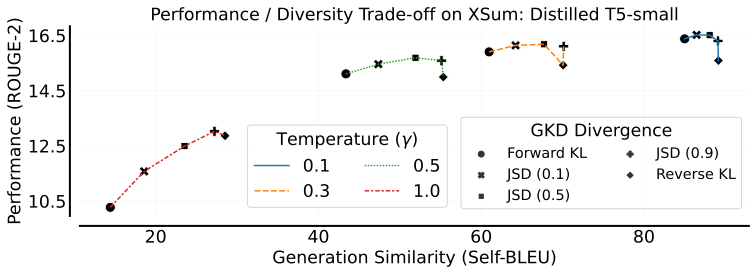
4.1 案例研究：抽象式摘要
我们首先在抽象式摘要任务上评估 GKD，该任务要求生成能够捕捉输入文档要点信息的摘要。为此，我们使用 XSum 数据集(Narayan et al., 2018)，它由新闻文章与人工撰写的摘要配对组成。遵循 PaLM(Chowdhery et al., 2022)，我们在 XSum 验证集上使用预测摘要的 ROUGE-2分数(Lin, 2004)评估性能，但在 ROUGE-L 和 ROUGE-1上观察到类似趋势。我们使用在 XSum 上经过监督式微调的 T5 模型作为蒸馏的学生模型，而使用微调后的 T5-XL 作为教师模型。 额外实验细节见附录A.3。
与基线比较。首先，我们探索 GKD 与广泛使用的 KD 方法（即 SeqKD 和 Supervised KD）在不同学生模型规模下的比较。如图1所示，我们观察到 GKD 带来了一致的改进，这证明了 GKD 在学生容量方面的可扩展性。值得注意的是，GKD 使我们能够超越 PaLM（540B）的少样本性能，所用 T5 模型的规模缩小了。我们还将 GKD 变体与 ImitKD 和 f-distill 进行比较，并分别用贪心采样和温度采样（）评估性能，结果见图3。使用 JSD（0.9）的同策略 GKD 在两种场景下都优于这些额外基线。
数据效率与扩展。 为了评估 GKD 的效率和可扩展性，我们使用子采样的 XSum 训练数据集蒸馏 T5-XL 教师模型：1K（0.5%）、10K（5%）和50K（25%）个示例。 我们使用 T5-small 作为学生模型，并在图3中报告数据扩展曲线。值得注意的是，在5%子采样数据集上、不使用任何真实摘要的同策略 GKD，优于使用带有真实摘要的整个训练数据集的监督式 KD 和 ImitKD。
GKD 消融实验。我们在图A.12和A.13中针对不同学生规模，对 GKD 中的不同散度和学生数据比例进行了消融。同策略变体和混合变体始终优于监督式变体。当使用温度采样进行评估时，寻求众数的散度表现更好，而使用贪心采样时散度选择对性能影响不大。
选择 GKD 散度。蒸馏所选的散度对于决定摘要质量与多样性之间的权衡至关重要。由于采样温度也可以调整以平衡摘要质量和多样性，最优散度选择取决于温度。为了理解这种依赖性，我们评估了使用不同散度的同策略 GKD 蒸馏的 T5-small。如图4所示，某些散度（如 JSD0.5和 JSD0.9）在高温下提供更好的质量但多样性较低。然而，随着温度降低，不同散度之间的质量差异缩小，同时多样性也下降。
结合 RL 的同策略 GKD。在摘要任务中，我们希望模型生成的摘要与输入文档在事实上保持一致。然而，仅靠蒸馏可能无法改善事实一致性，因为即使大型模型也会产生幻觉并生成不一致的摘要。最近，Roit et al. (2023)通过使用以文本蕴含反馈作为奖励的 RL（RLEF）来缓解摘要任务中的幻觉，因为忠实摘要必须能够从输入文档中通过文本蕴含推出。受其成功启发，我们探索将使用类 REINFORCE 目标的 RL 微调与同策略 GKD 相结合，如第3.2节所述。如图5所示，与教师模型相比，结合 RL 微调的 GKD 大幅提升了事实一致性，同时使蒸馏后的学生模型在摘要质量上获得大幅提升。
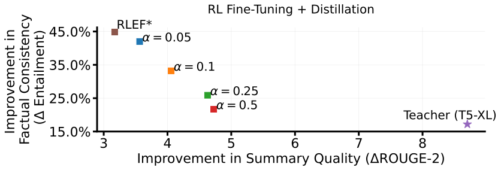
4.2 机器翻译
4.3 算术推理
Wei 等人（2022） 表明推理能力似乎只在至少具有数十亿参数的 LLM 中才显现，这使得 KD 对于提升较小模型的推理能力十分重要。为此，我们在 GSM8K （Cobbe 等人，2021） 上评估 GKD，这是一个包含需要多步逻辑推理的小学数学应用题的高质量数据集。在这里，我们探索 GKD 与思维链（CoT）（Wei 等人，2022） 相结合，CoT 是一种通过提示 LLM 在给出最终答案之前生成中间推理步骤来提升其推理能力的常用方法。
设置。我们在 GSM8K 的数学问题前加上前 4 个 CoT 输入-输出示例来进行少样本提示，这些示例来自 Wei 等人（2022）。评估时，我们通过借助外部计算器检查目标答案是否与最终答案匹配来报告测试集上的准确率，类似于 Cobbe 等人（2021）。 对于监督训练，我们使用由 Magister 等人（2022） 生成的 CoT 输出，在 GSM8K 的原始训练划分中得到约 5.3K 个（问题，CoT）对。我们使用 Flan-T5 模型 （Chung 等人，2022） 作为蒸馏的起点，这些模型已在上述 CoT 数据集上监督微调 10K 步。我们使用微调后的 FLAN T5-XL 作为教师模型， 其测试准确率为 27.9。更多实验见附录 A.4。
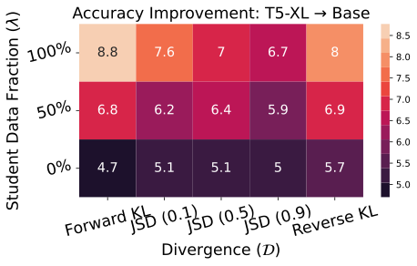
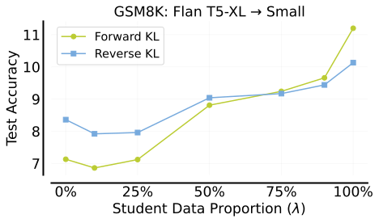
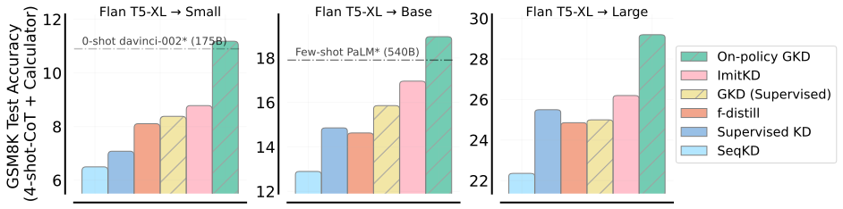
结果。我们首先消融 GKD 变体，并在图 8 和 A.14 中报告结果。我们观察到，当仅使用固定的 CoT 数据集或将其与学生生成的 CoT 混合时，性能始终不及仅使用学生生成的 CoT。此外，前向 KL 表现相当好，与我们在 XSum 上使用贪心采样时的发现类似。值得注意的是，反向 KL 也表现良好，尤其是在仅使用固定数据集训练时。另外，图 8 表明，只要至少有 25% 的数据是同策略的，性能就会随着同策略数据比例的增加而持续提升。 此外，如图 9 所示，我们观察到，在所有学生模型规模下，同策略 GKD 的性能均优于基线 KD 方法。最后，如附录 A.1 所示，我们在 GSM8k 上观察到 GKD 用于自蒸馏的有前景结果。
4.4 任务无关蒸馏：指令微调
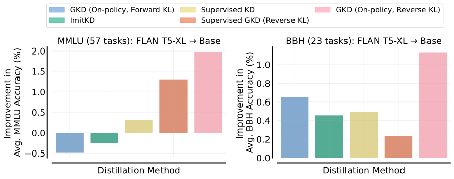
虽然任务特定蒸馏为预定义任务提供了优化的性能（这通常对部署至关重要），但任务无关蒸馏在事先未知任务确切性质且部署期间可能变化的情况下提供了一种有吸引力的替代方案。正如 Sanh 等人（2019） 所强调的，任务无关蒸馏的吸引力在于其效率：一旦完成蒸馏，模型就可以通过提示或微调重新用于多个下游任务。
设置。为研究任务无关 KD，我们聚焦于指令微调 （Chung 等人，2022）。我们的目标是增强蒸馏模型处理以指令形式呈现的多样化任务的能力。为此，我们采用 FLAN T5-XL 模型作为教师模型，并将其知识蒸馏到 FLAN T5-Base 中，如 Chung 等人（2022） 所介绍。我们的蒸馏过程利用了全面的 FLAN2021 指令微调数据集，该数据集拥有 5.36 百万个示例，涵盖 62 个不同的语言理解与生成任务。超参数详情见表 A.4。
评估。为衡量任务无关模型的通用性，必须在多样化的任务集上对其进行测试。与 Chung 等人（2022） 一致，我们在两个留出基准套件上评估蒸馏后的 T5-base 学生模型：（1）MMLU（大规模多任务语言理解）包含来自 57 个任务（如数学、历史、法律和医学）的考试题目；（2）BBH（BIG-Bench Hard）包含来自 BIG-Bench 的 23 个任务，在这些任务上 PaLM 540B （Chowdhery 等人，2022） 的表现低于人类评分者的平均水平。对于性能，我们报告蒸馏模型通过标准少样本提示直接预测答案的能力，并在 MMLU 和 BBH 的任务上取平均。
结果。我们报告了各种方法在 50K 训练步后获得的蒸馏检查点的性能，结果见图 10。我们发现，使用反向 KL 的同策略 GKD 大幅优于监督 KD 和 ImitKD。值得注意的是，在指令微调的背景下，我们发现使用反向 KL 的效果远好于前向 KL。我们推测，反向 KL 在指令微调中的有效性可能源于其寻模特性，因为它确保模型聚焦于指令所指定的主要意图或行为。因此，模型可能会优先考虑核心行为而非较不相关的细节，从而在留出任务上取得更好的性能。
5 相关工作
知识蒸馏。 监督 KD （Buciluǎ 等人，2006；Hinton 等人，2015） 是一种经典方法，并已成功用于蒸馏自回归模型 （Sanh 等人，2019）。蒸馏此类模型的另一种方法是序列级 KD （Kim & Rush，2016）。同策略 GKD 大幅优于监督 KD 和 SeqKD（图 1）。 其他 KD 方法训练学生模型去匹配从教师模型获得的不同量，例如隐藏状态 （Jiao 等人，2020） 或注意力得分 （Wang 等人，2020）。然而，这些方法均未建立蒸馏与模仿学习之间的联系，而纯监督方法可能会遭受训练-推理不匹配，也称为暴露偏差 （Ranzato 等人，2015；Bengio 等人，2015）。虽然 He 等人（2019） 认为这种不匹配可能并不关键，但若干论文表明暴露偏差会导致文本生成质量差 （Zhang 等人，2019；Chiang & Chen，2021；Arora 等人，2022）。
ImitKD （Lin 等人，2020） 通过从学生模型和固定数据集中采样序列来识别这种联系，但并未进一步推进这一想法。与 GKD 不同，ImitKD 没有探索纯粹的同策略数据收集，也没有整合 RL 微调。此外，ImitKD 在词元级别保持前向 KL，而当人们能够获取教师的对数概率而不仅仅是样本时，这并非必要。此外，GKD 展示了该想法的可扩展性，所处理学生模型的规模约为 ImitKD 所探索规模的 。ImitKD 可以视为采用前向 KL、并在 上采用非增调度的 GKD，一个简单选择为 。最近，f-distill （Wen 等人，2023） 将序列级 KD 表述为最小化 f-散度，并基于词元级学生与教师分布之间的全变差距离提出了一个可处理的目标。本质上，ImitKD 和 f-distill 都是 GKD 的具体实例，而我们证明它们会导致比同策略 GKD 更差的实证结果（图 3、9）。
同期关于 MiniLLM （Gu 等人，2023） 的工作也利用与模仿学习的联系，将蒸馏表述为一个 RL 问题。具体而言，MiniLLM 使用策略梯度方法在序列级别优化教师与学生之间的反向 KL（而似然最大化则是前向的）。 然而，我们认为 GKD 更简单且更稳定，更接近监督训练，因为它不通过学生的采样过程进行反向传播。事实上，MiniLLM 依赖若干稳定化技巧来处理高方差、奖励投机和生成长度偏差。GKD 也更通用，因为它还可以与其他散度（如前向 KL 或 JSD）一起使用，而这些散度的表现可能优于反向 KL（图 6、8）。
强化学习微调。如今已有大量用强化学习微调语言模型的例子，其奖励可以是针对某个指标的优化(Wu et al., 2018)，也可以是利用人类反馈学到的(Ouyang et al., 2022)。在这些方法中，通常会将经强化学习微调的模型正则化，使其偏向初始模型（通常是经监督微调的模型）。然而，据我们所知，我们是首个同时进行蒸馏与强化学习微调的工作（图 5）。这看似自然，但从优化角度看却颇为不同，因为它将对初始策略的正则化改为对教师策略的正则化，并且我们通过实验证明这是一种可行的方法。
使用推理轨迹或推理性文本进行蒸馏。思维链提示(Nye et al., 2021; Wei et al., 2022)近来表明，仅通过提示，LLM 就能逐步解决复杂的推理任务。这一想法很快被移植到知识蒸馏（KD）中，做法是用思维链提示扩充教师数据集以微调学生模型(Magister et al., 2022; Ho et al., 2022; Hsieh et al., 2023)。蒸馏仍以监督方式进行，也可以考虑其他类型的增强提示(Li et al., 2022; Mukherjee et al., 2023)。我们采用同样的思路，但将其与使用多种散度的同策略蒸馏相结合。这体现了 GKD 的通用性，并优于纯监督方法，正如我们在 GSM8K 上的结果所示（图 9）。
6 结论
在本工作中，我们提出了 GKD，以解决蒸馏自回归语言模型时训练与推理之间的分布不匹配问题。在三项语言生成任务上：抽象摘要、机器翻译和算术推理，GKD 的表现持续优于常用的知识蒸馏方法。我们进一步表明，GKD 可以与强化学习相结合，在蒸馏大型教师模型知识的同时优化序列级奖励，我们相信这能够改进语言模型中被广泛使用的 RLHF 训练阶段。未来工作中一个有趣的方向是将 GKD 扩展到音频(Radford et al., 2023)、视频(Villegas et al., 2022)和文本到图像生成(Yu et al., 2022)的自回归序列模型。我们希望我们的工作能够对致力于提升生成式自回归序列模型性能与效率的研究人员和从业者有所帮助。
参考文献
- Agarwal et al. (2022) Rishabh Agarwal, Max Schwarzer, Pablo Samuel Castro, Aaron C Courville, and Marc Bellemare. Reincarnating reinforcement learning: Reusing prior computation to accelerate progress. Advances in Neural Information Processing Systems, 35:28955–28971, 2022.
- Arora et al. (2022) Kushal Arora, Layla El Asri, Hareesh Bahuleyan, and Jackie Chi Kit Cheung. Why exposure bias matters: An imitation learning perspective of error accumulation in language generation. arXiv preprint arXiv:2204.01171, 2022.
- Bengio et al. (2015) Samy Bengio, Oriol Vinyals, Navdeep Jaitly, and Noam Shazeer. Scheduled sampling for sequence prediction with recurrent neural networks. Advances in neural information processing systems, 28, 2015.
- Bojar et al. (2014) Ondřej Bojar, Christian Buck, Christian Federmann, Barry Haddow, Philipp Koehn, Johannes Leveling, Christof Monz, Pavel Pecina, Matt Post, Herve Saint-Amand, et al. Findings of the 2014 workshop on statistical machine translation. In Proceedings of the ninth workshop on statistical machine translation, pp. 12–58, 2014.
- Buciluǎ et al. (2006) Cristian Buciluǎ, Rich Caruana, and Alexandru Niculescu-Mizil. Model compression. In Proceedings of the 12th ACM SIGKDD international conference on Knowledge discovery and data mining, pp. 535–541, 2006.
- Chiang & Chen (2021) Ting-Rui Chiang and Yun-Nung Chen. Relating neural text degeneration to exposure bias. arXiv preprint arXiv:2109.08705, 2021.
- Chowdhery et al. (2022) Aakanksha Chowdhery, Sharan Narang, Jacob Devlin, Maarten Bosma, Gaurav Mishra, Adam Roberts, Paul Barham, Hyung Won Chung, Charles Sutton, Sebastian Gehrmann, et al. Palm: Scaling language modeling with pathways. arXiv preprint arXiv:2204.02311, 2022.
- Chung et al. (2022) Hyung Won Chung, Le Hou, Shayne Longpre, Barret Zoph, Yi Tay, William Fedus, Eric Li, Xuezhi Wang, Mostafa Dehghani, Siddhartha Brahma, et al. Scaling instruction-finetuned language models. arXiv preprint arXiv:2210.11416, 2022.
- Cobbe et al. (2021) Karl Cobbe, Vineet Kosaraju, Mohammad Bavarian, Mark Chen, Heewoo Jun, Lukasz Kaiser, Matthias Plappert, Jerry Tworek, Jacob Hilton, Reiichiro Nakano, et al. Training verifiers to solve math word problems. arXiv preprint arXiv:2110.14168, 2021.
- Gu et al. (2023) Yuxian Gu, Li Dong, Furu Wei, and Minlie Huang. Knowledge distillation of large language models. arXiv preprint arXiv:2306.08543, 2023.
- He et al. (2019) Tianxing He, Jingzhao Zhang, Zhiming Zhou, and James Glass. Exposure bias versus self-recovery: Are distortions really incremental for autoregressive text generation? arXiv preprint arXiv:1905.10617, 2019.
- Hinton et al. (2015) Geoffrey Hinton, Oriol Vinyals, and Jeff Dean. Distilling the knowledge in a neural network. arXiv preprint arXiv:1503.02531, 2015.
- Ho et al. (2022) Namgyu Ho, Laura Schmid, and Se-Young Yun. Large language models are reasoning teachers. arXiv preprint arXiv:2212.10071, 2022.
- Hsieh et al. (2023) Cheng-Yu Hsieh, Chun-Liang Li, Chih-Kuan Yeh, Hootan Nakhost, Yasuhisa Fujii, Alexander Ratner, Ranjay Krishna, Chen-Yu Lee, and Tomas Pfister. Distilling step-by-step! outperforming larger language models with less training data and smaller model sizes. arXiv preprint arXiv:2305.02301, 2023.
- Huszár (2015) Ferenc Huszár. How (not) to train your generative model: Scheduled sampling, likelihood, adversary? arXiv preprint arXiv:1511.05101, 2015.
- Jiao et al. (2020) Xiaoqi Jiao, Yichun Yin, Lifeng Shang, Xin Jiang, Xiao Chen, Linlin Li, Fang Wang, and Qun Liu. Tinybert: Distilling bert for natural language understanding. In Findings of the Association for Computational Linguistics: EMNLP 2020, pp. 4163–4174, 2020.
- Kaplan et al. (2020) Jared Kaplan, Sam McCandlish, Tom Henighan, Tom B Brown, Benjamin Chess, Rewon Child, Scott Gray, Alec Radford, Jeffrey Wu, and Dario Amodei. Scaling laws for neural language models. arXiv preprint arXiv:2001.08361, 2020.
- Kelly et al. (2019) Michael Kelly, Chelsea Sidrane, Katherine Driggs-Campbell, and Mykel J Kochenderfer. Hg-dagger: Interactive imitation learning with human experts. In 2019 International Conference on Robotics and Automation (ICRA), pp. 8077–8083. IEEE, 2019.
- Kim & Rush (2016) Yoon Kim and Alexander M Rush. Sequence-level knowledge distillation. arXiv preprint arXiv:1606.07947, 2016.
- Le (2017) Tuan Anh Le. Reverse vs forward kl, December 2017. URL https://www.tuananhle.co.uk/notes/reverse-forward-kl.html.
- Li et al. (2022) Shiyang Li, Jianshu Chen, Yelong Shen, Zhiyu Chen, Xinlu Zhang, Zekun Li, Hong Wang, Jing Qian, Baolin Peng, Yi Mao, et al. Explanations from large language models make small reasoners better. arXiv preprint arXiv:2210.06726, 2022.
- Lin et al. (2020) Alexander Lin, Jeremy Wohlwend, Howard Chen, and Tao Lei. Autoregressive knowledge distillation through imitation learning. arXiv preprint arXiv:2009.07253, 2020.
- Lin (2004) Chin-Yew Lin. Rouge: A package for automatic evaluation of summaries. In Text summarization branches out, pp. 74–81, 2004.
- Liu et al. (2023) Xiaoxuan Liu, Lanxiang Hu, Peter Bailis, Ion Stoica, Zhijie Deng, Alvin Cheung, and Hao Zhang. Online speculative decoding. arXiv preprint arXiv:2310.07177, 2023.
- Magister et al. (2022) Lucie Charlotte Magister, Jonathan Mallinson, Jakub Adamek, Eric Malmi, and Aliaksei Severyn. Teaching small language models to reason. arXiv preprint arXiv:2212.08410, 2022.
- Mukherjee et al. (2023) Subhabrata Mukherjee, Arindam Mitra, Ganesh Jawahar, Sahaj Agarwal, Hamid Palangi, and Ahmed Awadallah. Orca: Progressive learning from complex explanation traces of gpt-4. arXiv preprint arXiv:2306.02707, 2023.
- Narayan et al. (2018) Shashi Narayan, Shay B Cohen, and Mirella Lapata. Don’t give me the details, just the summary! topic-aware convolutional neural networks for extreme summarization. arXiv preprint arXiv:1808.08745, 2018.
- Nye et al. (2021) Maxwell Nye, Anders Johan Andreassen, Guy Gur-Ari, Henryk Michalewski, Jacob Austin, David Bieber, David Dohan, Aitor Lewkowycz, Maarten Bosma, David Luan, et al. Show your work: Scratchpads for intermediate computation with language models. arXiv preprint arXiv:2112.00114, 2021.
- Ouyang et al. (2022) Long Ouyang, Jeffrey Wu, Xu Jiang, Diogo Almeida, Carroll Wainwright, Pamela Mishkin, Chong Zhang, Sandhini Agarwal, Katarina Slama, Alex Ray, et al. Training language models to follow instructions with human feedback. Advances in Neural Information Processing Systems, 35:27730–27744, 2022.
- Parisotto et al. (2015) Emilio Parisotto, Jimmy Lei Ba, and Ruslan Salakhutdinov. Actor-mimic: Deep multitask and transfer reinforcement learning. arXiv preprint arXiv:1511.06342, 2015.
- Pomerleau (1991) Dean A Pomerleau. Efficient training of artificial neural networks for autonomous navigation. Neural computation, 3(1):88–97, 1991.
- Radford et al. (2023) Alec Radford, Jong Wook Kim, Tao Xu, Greg Brockman, Christine McLeavey, and Ilya Sutskever. Robust speech recognition via large-scale weak supervision. In International Conference on Machine Learning, pp. 28492–28518. PMLR, 2023.
- Raffel et al. (2020) Colin Raffel, Noam Shazeer, Adam Roberts, Katherine Lee, Sharan Narang, Michael Matena, Yanqi Zhou, Wei Li, and Peter J Liu. Exploring the limits of transfer learning with a unified text-to-text transformer. The Journal of Machine Learning Research, 21(1):5485–5551, 2020.
- Ranzato et al. (2015) Marc’Aurelio Ranzato, Sumit Chopra, Michael Auli, and Wojciech Zaremba. Sequence level training with recurrent neural networks. arXiv preprint arXiv:1511.06732, 2015.
- Roit et al. (2023) Paul Roit, Johan Ferret, Lior Shani, Roee Aharoni, Geoffrey Cideron, Robert Dadashi, Matthieu Geist, Sertan Girgin, Léonard Hussenot, Orgad Keller, et al. Factually consistent summarization via reinforcement learning with textual entailment feedback. arXiv preprint arXiv:2306.00186, 2023.
- Ross & Bagnell (2010) Stéphane Ross and Drew Bagnell. Efficient reductions for imitation learning. In Proceedings of the thirteenth international conference on artificial intelligence and statistics, pp. 661–668. JMLR Workshop and Conference Proceedings, 2010.
- Ross et al. (2011) Stéphane Ross, Geoffrey Gordon, and Drew Bagnell. A reduction of imitation learning and structured prediction to no-regret online learning. In Proceedings of the fourteenth international conference on artificial intelligence and statistics, pp. 627–635. JMLR Workshop and Conference Proceedings, 2011.
- Sanh et al. (2019) Victor Sanh, Lysandre Debut, Julien Chaumond, and Thomas Wolf. Distilbert, a distilled version of bert: smaller, faster, cheaper and lighter. arXiv preprint arXiv:1910.01108, 2019.
- Shazeer & Stern (2018) Noam Shazeer and Mitchell Stern. Adafactor: Adaptive learning rates with sublinear memory cost. In International Conference on Machine Learning, pp. 4596–4604. PMLR, 2018.
- Singh et al. (2023) Avi Singh, John D Co-Reyes, Rishabh Agarwal, Ankesh Anand, Piyush Patil, Peter J Liu, James Harrison, Jaehoon Lee, Kelvin Xu, Aaron Parisi, et al. Beyond human data: Scaling self-training for problem-solving with language models. arXiv preprint arXiv:2312.06585, 2023.
- Villegas et al. (2022) Ruben Villegas, Mohammad Babaeizadeh, Pieter-Jan Kindermans, Hernan Moraldo, Han Zhang, Mohammad Taghi Saffar, Santiago Castro, Julius Kunze, and Dumitru Erhan. Phenaki: Variable length video generation from open domain textual description. arXiv preprint arXiv:2210.02399, 2022.
- Wang et al. (2020) Wenhui Wang, Furu Wei, Li Dong, Hangbo Bao, Nan Yang, and Ming Zhou. Minilm: Deep self-attention distillation for task-agnostic compression of pre-trained transformers. Advances in Neural Information Processing Systems, 33:5776–5788, 2020.
- Wei et al. (2022) Jason Wei, Xuezhi Wang, Dale Schuurmans, Maarten Bosma, Ed Chi, Quoc Le, and Denny Zhou. Chain of thought prompting elicits reasoning in large language models. arXiv preprint arXiv:2201.11903, 2022.
- Wen et al. (2023) Yuqiao Wen, Zichao Li, Wenyu Du, and Lili Mou. f-divergence minimization for sequence-level knowledge distillation. arXiv preprint arXiv:2307.15190, 2023.
- Wu et al. (2018) Lijun Wu, Fei Tian, Tao Qin, Jianhuang Lai, and Tie-Yan Liu. A study of reinforcement learning for neural machine translation. arXiv preprint arXiv:1808.08866, 2018.
- Yim et al. (2017) Junho Yim, Donggyu Joo, Jihoon Bae, and Junmo Kim. A gift from knowledge distillation: Fast optimization, network minimization and transfer learning. In Proceedings of the IEEE conference on computer vision and pattern recognition, pp. 4133–4141, 2017.
- Yu et al. (2022) Jiahui Yu, Yuanzhong Xu, Jing Yu Koh, Thang Luong, Gunjan Baid, Zirui Wang, Vijay Vasudevan, Alexander Ku, Yinfei Yang, Burcu Karagol Ayan, et al. Scaling autoregressive models for content-rich text-to-image generation. Transactions on Machine Learning Research, 2022.
- Zhang et al. (2019) Wen Zhang, Yang Feng, Fandong Meng, Di You, and Qun Liu. Bridging the gap between training and inference for neural machine translation. In Anna Korhonen, David Traum, and Lluís Màrquez (eds.), Proceedings of the 57th Annual Meeting of the Association for Computational Linguistics, 2019. URL https://aclanthology.org/P19-1426.
- Zhou et al. (2023) Yongchao Zhou, Kaifeng Lyu, Ankit Singh Rawat, Aditya Krishna Menon, Afshin Rostamizadeh, Sanjiv Kumar, Jean-François Kagy, and Rishabh Agarwal. Distillspec: Improving speculative decoding via knowledge distillation. arXiv preprint arXiv:2310.08461, 2023.
- Zhu et al. (2018) Yaoming Zhu, Sidi Lu, Lei Zheng, Jiaxian Guo, Weinan Zhang, Jun Wang, and Yong Yu. Texygen: A benchmarking platform for text generation models. In The 41st international ACM SIGIR conference on research & development in information retrieval, pp. 1097–1100, 2018.
Appendix A 附录
A.1 自蒸馏
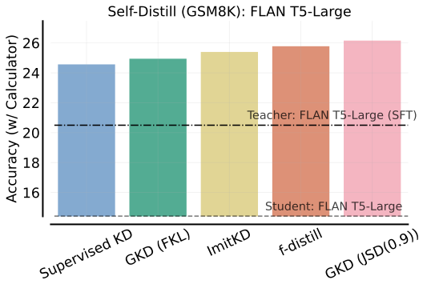
A.2 T5 模型
作为基础检查点，我们从 LM-adapted T5v1.1 models 开始。这些经语言模型适配的模型由 T5v1.1 初始化，并额外训练 100K 步，训练使用 T5 论文 （Raffel 等人，2020） 所讨论的语言模型目标。这些检查点已在 https://console.cloud.google.com/storage/browser/t5-data/pretrained_models 开源。
在我们的实验中，我们通过在原始训练数据集上进一步进行监督微调来初始化用于蒸馏的学生模型和教师模型，如下所述：
-
•
XSum。对于 small、base、large 和 XL 模型，我们使用 LM-Adapted T5v1.1 模型，它们分别经过 100K、50K、38k 和 8K 步监督微调。
-
•
WMT。对于 small、base、large 和 XL 模型，我们使用 LM-Adapted T5v1.1 模型，它们分别经过 250K、250K、110k 和 50K 步监督微调。
-
•
GSM8K。所有模型均从 FLAN-T5 模型开始，在 Palm-540 生成的思维链数据集上经监督微调 10K 步。
与 T5 和 FLAN-T5 类似，我们的实验使用 Adafactor 优化器(Shazeer & Stern, 2018)。
GKD 的计算成本。包括基线在内的所有方法都从经监督微调的学生检查点开始，这需要在最小的 TPUv3（8 核）上训练数小时。在 GSM8K 上，与从固定输出数据集中采样相比，学生采样的计算开销约为 、 和 ，分别对应学生与教师的比例为 、 和 。对于 RLHF + GKD，计算开销相对较小，因为我们只运行推理以获取教师 logits，而非学生 logits。
此外，在真实应用场景中，大部分成本来自推理时的服务成本，而非微调成本。具体而言，如果在微调期间从学生模型采样过于昂贵，那么将该模型服务给用户（用户数可能从数万到数十亿不等）也可能过于昂贵。总体而言，同策略 GKD 带来的性能收益或许值得这些计算成本，尤其是在与 RLHF 结合时。
A.3 XSum
学习率扫描。我们在 {0.0001, 0.0003, 0.001} 范围内进行了学习率扫描，发现 0.0003 对 T5-base、T5-large 最佳，而 0.001 对 T5-small 带来最佳性能。因此，默认情况下我们使用学习率 0.0003，但在报告 T5-small 的结果时使用 0.001。我们发现反向 KL 对较高的学习率更为敏感，因此在使用反向 KL 时，我们对所有模型默认使用 0.0003。
| Hyperparameter | Value |
| Training Steps | 40,000 |
| Batch size | 32 |
| Eval Split | Validation |
| Dropout | 0.0 |
| Learning Rate (LR) | 0.0003 |
| LR Warmup Steps | 2,000 |
| LR Cooldown (Begin, End) | (30,000, 40,000) |
| Warmup Schedule | Linear (from 0 to LR) |
| Cooldown Schedule | Linear (from LR to 0) |
| Max Input Length | 1024 |
| Max Output Length | 64 |
| Evaluation | Greedy & Temp. Sampling |
GKD 消融实验。我们在图 A.12 和 A.13 中针对不同大小的学生模型，对 GKD 中不同的散度和学生数据比例进行了消融。同策略变体和混合变体持续优于监督变体。当使用温度采样进行评估时，模式寻求类散度表现更好，而使用贪心采样时，散度的选择对性能影响不大。
A.4 GSM8K
在训练方面，我们使用 Palm-540B 生成的思维链输出，生成工作由 Magister 等人（2022） 完成。 我们报告在 GSM8K 数据集原始测试划分上的准确率(Cobbe et al., 2021)。我们使用蒸馏后训练结束时得到的检查点来报告结果，结果在 3 个随机种子上取平均。
| Hyperparameter | Value |
| Training Steps | 40,000 |
| Batch size | 32 |
| Evaluation Split | Test |
| Dropout | 0.05 |
| Learning Rate (LR) | 0.0003 |
| LR Warmup Steps | 2,000 |
| LR Cooldown (Begin, End) | (30,000, 40,000) |
| Warmup Schedule | Linear (from 0 to LR) |
| Cooldown Schedule | Linear (from LR to 0) |
| Max Input Length | 512 |
| Max Output Length | 320 |
| Checkpoint | Flan-T5 |
| Teacher softmax temperature | 0.1 |
| Evaluation | Greedy Sampling |
少样本思维链提示。此处我们给出实验中所用的 4-shot 思维链提示：
问：树林里有 15 棵树。树林工人今天将在树林里种树。他们完成后，将有 21 棵树。树林工人今天种了多少棵树？
答：原本有 15 棵树。后来又种了一些，变成 21 棵树。因此一定种了 21 - 15 = 6 棵。答案是 6。
问：如果停车场里有 3 辆车，又来了 2 辆车，停车场里有多少辆车？
答：原本有 3 辆车。又来了 2 辆车。3 + 2 = 5。答案是 5。
问：Leah 有 32 块巧克力，她妹妹有 42 块。如果她们吃了 35 块，她们总共还剩多少块？
答：原本 Leah 有 32 块巧克力。她妹妹有 42 块。因此她们总共有 32 + 42 = 74 块。吃掉 35 块后，她们还剩 74 - 35 = 39 块。答案是 39。
问：Jason 有 20 根棒棒糖。他给了 Denny 一些棒棒糖。现在 Jason 有 12 根棒棒糖。Jason 给了 Denny 多少根棒棒糖？
答：Jason 一开始有 20 根棒棒糖。给了 Denny 一些后，他有 12 根。因此他给了 Denny 20 - 12 = 8 根。答案是 8。
A.5 WMT
在评估方面，我们使用与 Raffel et al. (2020) 相同的超参数进行束搜索。我们报告训练后得到的最终检查点的性能。为降低结果的方差，我们报告在 3 个随机种子上平均后的结果。
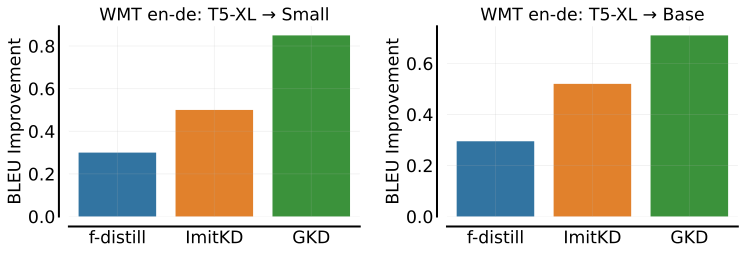
| Hyperparameter | Value |
| Training Steps | 100,000 |
| Batch size | 32 |
| Seqio Task Name | ’wmt_t2t_ende_v003’ |
| Eval Split | Validation |
| Dropout | 0.0 |
| Warmup Steps | 5,000 |
| Warmup Schedule | Linear (from 0 to LR) |
| Learning Rate (LR) | 0.0003 |
| Input Length (Tokenized) | 80 |
| Output Length (Tokenized) | 80 |
| Teacher softmax temperature | 1.0 |
| Evaluation | Beam Search |
A.6 指令微调
| Hyperparameter | Value |
| Training Steps | 50,000 |
| Batch size | 128 |
| Task | FLAN2021 |
| Dropout | 0.0 |
| Warmup Schedule | No Warmup |
| Learning Rate (LR) | 0.0001 |
| Input Length (Tokenized) | 2048 |
| Output Length (Tokenized) | 256 |
| Teacher softmax temperature | 1.0 |
| Evaluation | Greedy Sampling |
A.7 模式寻求与模式覆盖 KL 对比
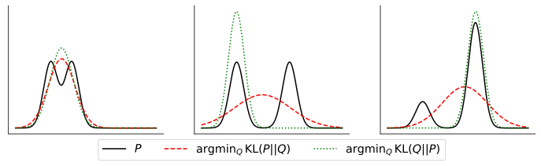